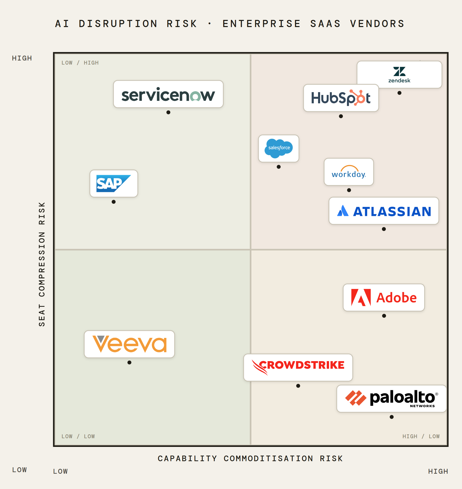

Two of a kind
Black Wednesday for software hit on January 29, 2026. ServiceNow dropped 9.94% - despite beating earnings for the ninth consecutive quarter. SAP fell ~14% the same day because growth expectations missed by a single percentage point. HubSpot dropped 11.2%. Atlassian 10.7%. Things didn't ease up and by mid-February, roughly $2 trillion in enterprise software market cap had been erased. It had been a downhill run worse than the relative decline of the dot-com era with one leading explanation: AI.
Scanning the headlines, the prevailing narrative was that rampant "AI disruption" was punishing SaaS companies severely and indiscriminately. But look more closely, and the damage was strikingly uneven. HubSpot was down over 60% in the twelve months to mid-February. Meanwhile, CrowdStrike, the cybersecurity platform, ended the period down less than 5%. Why such a stark imbalance?
Unpacking the blanket "AI disruption" narrative, we find two distinct threats that were being conflated:
- The first - and more commonly cited - is capability commoditisation: The belief that AI could replicate what SaaS companies provide, but better and cheaper. If Claude can help a team vibe-code a bespoke CRM in a weekend, why pay Hubspot?
- But the second - and more subtle threat - is seat compression: If AI is reducing headcount, then the human seat - the fundamental unit of value SaaS has priced itself against over the last thirty years - also begins to tank. The pre-disruption logic was sound. You pay per user because more users means more value delivered. Salesforce charges per salesperson. ServiceNow per employee touching the platform. Workday per person in the HR system. The seat count is just the proxy for the value the software creates. AI is breaking that proxy. A company running 30% fewer knowledge workers on the same workflows doesn't need 30% fewer of the software - it needs the same value, just with fewer humans in the loop.
Critically, the two threats behave in structurally different ways: Capability commoditisation requires a specific competitive threat or internal buildout to materialise: a credible alternative that customers actually switch to. Meanwhile, seat compression just requires AI to improve over time - something it has been reliably doing since its inception. It's the quieter, more durable threat.
This is what creates the uneven risk landscape. Some companies are somewhat insulated to both, some to one, some to neither.
A lay of the land
To visualise the uneven terrain, we can map vendors across two axes - capability commoditisation and seat compression risk - to produce four distinct risk profiles that explain the divergence more precisely than a single "AI disrupts SaaS" narrative.

Quadrant 1: High commoditisation risk, high seat compression risk. Pure productivity tools: document management, basic HR analytics, basic marketing workflows - anything that is simple and repeatable is a task that AI can automate. These face the worst outcome: simultaneous existential threat from customers who might build in-house alternatives and revenue decline from contracting headcount. HubSpot sits here uncomfortably: a mid-market CRM and marketing automation platform whose workflows are exactly what AI agents automate best, serving exactly the companies reducing headcount most aggressively. The proof is in the pudding: HubSpot was down over 60% in the twelve months to mid-February. Similarly, Atlassian reported its first-ever decline in enterprise seat counts in early 2026. It's the canary in the coal mine: not a single company under stress, but an entire pricing model under threat.
Quadrant 2: High commoditisation risk, low seat compression risk. A rarer find, but cybersecurity is a good example: AI commoditises specific analytical capabilities while simultaneously expanding the attack surface, meaning the function grows even as individual tasks get automated. Attackers benefit from AI too, so defenders can never reduce headcount below a certain floor. CrowdStrike is the exemplar: down less than 6% while peers fell 20%+ over the same period. Markets correctly identified that more capable AI systems increase demand for security platforms rather than threatening them.
The danger is that it's likely a temporary window. While the expanding attack surface sounds like a Jevons Paradox, cautionary tales suggest otherwise. Developer tooling followed an intuitive argument - AI makes coding cheaper, more software gets built, demand for engineers grows - but by early 2024, the US employed fewer software developers than it did in 2018, despite years of unprecedented demand. The demand did grow, but it was uneven: AI-specialist and senior engineering roles grew while junior and generalist roles almost vanished. The aggregate headcount fell because the composition of demand shifted faster than the volume increased. That's the trap that might face cybersecurity too.
Quadrant 3: Low commoditisation risk, high seat compression risk. ERP vendors: SAP, Oracle Fusion, Microsoft Dynamics. Customers automate back-office work, get leaner, and need fewer seats. But ERP systems are so embedded in mission-critical business processes that switching costs are not just high - for some organisations, replacement is operationally impossible on any reasonable timeline. This insulates against capability commoditisation almost entirely. Classic ERP moat.
Quadrant 4: Low commoditisation risk, low seat compression risk. Regulated-industry incumbents: healthcare records platforms, legal workflow software, financial compliance tools. Their moat lies in the liability paper trail. Someone has to be legally accountable when a medical record is wrong or a financial trade is misreported. Regulatory frameworks are built around human accountability, and that accountability can't be automated away because courts and regulators require an institutionally-licensed entity to own it. AI augments these functions, but it doesn't eliminate the requirement for the function to exist and be certified.
Interestingly, the markets punished these providers regardless. Veeva Systems lost roughly 43% from its September 2025 peak despite 16% revenue growth, 75%+ gross margins, 80% market share in life sciences SaaS, and a $5B+ cash position. One read was that it was a fair correction. Another is that the company's fundamentals were still intact - it just got swept along by the wave of indiscriminate SaaS sell-offs. The latter received institutional validation: just a month and a half later, Veeva was announced as a new S&P 500 constituent - a quality indicator that signalled official conviction of their business model durability. Shares rose ~9% in a single session, not because of good earnings, but because the market corrected a misclassification.
Watching the action
Fast forward to today and the transition away from per-seat licensing - already underway at SAP, Salesforce, ServiceNow, and Microsoft - is an implicit acknowledgement that the proxy is broken and the post-disruption seat model arithmetic just doesn't add up.
Different solutions are springing up: Consumption-based models - where customers pay per API call, per transaction, or per unit of compute used rather than per user - are the leading candidate, but enterprises historically resist unpredictable software costs and procurement teams are built around fixed commitments. Outcome-based models - where vendors charge based on measurable business results delivered, such as revenue generated or cases resolved - seem sensible but are subjective and almost impossible to audit. Either way, each solution is attempting the same thing: to reprice around the unit of value that will actually persist.
The action is unfolding in real time. The vendors who can build credible bridges to new pricing models before seat contraction bites will survive. The ones who don't will spend the following years arguing their moat is still intact while their revenue quietly disagrees.
Permanence
The underpinning insight is that every business position rests on assumptions of status quo stability. Salesforce - the pioneer of the pay-per-seat model - had a $200B+ peak valuation which rested on seat growth tracking headcount growth, headcount growing with business and economic growth, and recurring revenue compounding. The assumptions were real, the model worked, and the market priced it accordingly.
What AI revealed is how quickly assumptions can be invalidated, grounding can become shaky, and business models can rapidly unravel. Salesforce hit an all-time high closing price of ~$365 in December 2024 and a 52-week low of $163.52 in April 2026 - a peak-to-trough decline of over 55% in under eighteen months. Salesforce didn't execute poorly. But it was betting on a relationship between human headcount and value-creation which eventually stopped being true. Once that assumption moved, the valuation built on top of it had to move with it.
Importantly, that movement was compressed into timeframes that reflect the magnitude of threat, and the durability of incumbent position. While both are important factors in determining the length of the ticking time bomb, it's only the latter that is directly controllable. The businesses which understand which assumptions their position depends on, the nature of the imminent threat, and how exposed they are to those forces have a competitive advantage over those who simply accept the industry model.
The seat was never the point, it was always a proxy for value. The real lesson here is not about software pricing: it's that longevity should never be conflated with stability, that every durable business model is a bet on a position whose foundations can be challenged, and that those that survive are the ones who understand which assumptions they're depending on, not the ones who assume those assumptions are permanent.
This article is for informational purposes only and does not constitute financial advice. Nothing herein should be construed as a recommendation to buy or sell any security. Always consult a qualified financial adviser before making investment decisions.